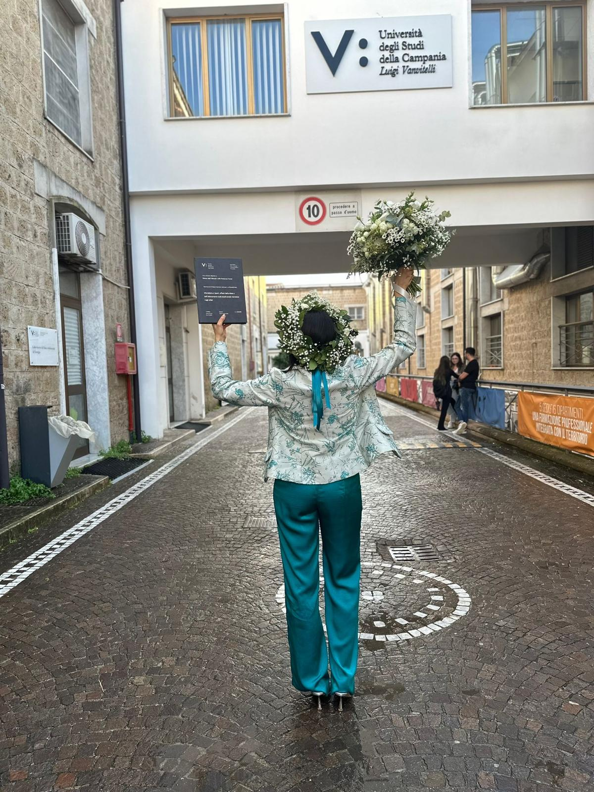

Dott.ssa Genny Ferrara
Biologa Nutrizionista
Sono una biologa nutrizionista con una formazione accademica multidisciplinare orientata alla salute, alla prevenzione e al benessere psicofisico.
Il mio percorso di studi è iniziato con la laurea triennale in Tecniche Erboristiche, per poi evolversi nella laurea magistrale in Scienze della Nutrizione Umana, approfondendo l'impatto biochimico degli alimenti sull'organismo.
Attualmente unisco la pratica clinica quotidiana all'aggiornamento costante nella nutrizione sportiva, esplorando in particolare il legame tra alimentazione, performance atletica e il microbiota intestinale.
Il Mio Percorso Formativo
Le tappe fondamentali della mia crescita professionale
Laurea in Tecniche Erboristiche
Studio approfondito delle proprietà delle piante officinali, dei principi attivi naturali e del loro impiego fitoterapico.
Scienze della Nutrizione Umana
Acquisizione delle competenze avanzate in biochimica clinica, nutrizione clinica e stesura di piani alimentari mirati.
Nutrizione Sportiva & Microbiota
Aggiornamento continuo focalizzato sulla performance atletica e sul profondo legame tra intestino e benessere generale.
Servizi e Aree di Competenza
Ecco cosa offro e i principali ambiti del mio percorso professionale
Prestazioni offerte
- Prima visita nutrizionale e anamnesi
- Valutazione nutrizionale personalizzata
- Analisi della composizione corporea con BIA
- Elaborazione di piani alimentari su misura
- Controlli nutrizionali periodici
- Percorsi di educazione alimentare
- Piani nutrizionali dedicati a sportivi e attivi
Aree di interesse
- Nutrizione sportiva e miglioramento della performance
- Ottimizzazione della composizione corporea
- Alimentazione preventiva e benessere a lungo termine
- Educazione e consapevolezza alimentare
- Piani nutrizionali altamente personalizzati
- Asse microbiota intestinale e performance
La prima visita comprende un'attenta analisi della tua storia clinica, delle tue abitudini alimentari, dello stile di vita e dei tuoi obiettivi, unita all'esame BIA per la composizione corporea.
Assolutamente no. L'obiettivo è l'educazione alimentare: creiamo un piano flessibile che si adatti ai tuoi gusti e alla tua vita sociale.